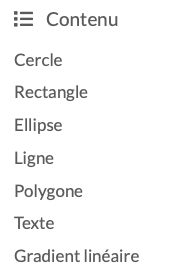

Style¶
Ceci est un guide de style pour éditer les documents de ce jupyter-book.
Début de chapitre¶
Mettez une phrase qui explique le concept principal du chapitre, suivi d’une image captivant en lien avec ce concept.

Vous pouvez trouver des GIF animés sur giphy.com
Choisir Media > Small et coller le lien.
Public cible¶
Le public principal est âgé de 15 à 18 ans.
Il ne faut pas utiliser le tu.
Utilisez nous et vous.
Faites attention au genre féminin.
Titres¶
Chaque document doit commencer avec un titre principal de niveau 1. Ce titre va apparaitre dans la barre de navigation du site, à gauche. De préférence ce titre doit tenir sur une seule ligne dans le menu de navigation (typiquement 1 à 3 mots). Ce titre au début du document est le seul titre de niveau 1.
# Titre
Tous les autres titres doivent être de niveau 2 ou 3.
## Sous-titre
### Sous-sous-titre
Les sous-titres (niveau 2) apparaissent dans le menu de navigation de la page, sous Contenu à droite. De préférence il faut les choisir courts, pour qu’ils ne dépassent pas une ligne. Voici un exemple

Il ne faut pas sauter d’hiérarchie. Par exemple il ne faut pas aller d’un titre de niveau 1 directement vers un titre de niveau 3. Ceci produit un avertissement lors de la compilation avec jupyter-book
WARNING: Non-consecutive header level increase; 0 to 2
Attention:
il ne faudrait pas avoir plus que 12 documents dans une section
(autrement le menu sur smartphone devient trop long)il ne faudrait pas avoir plus que 12 sous-sections dans un documents
(autrement le bouton forward pourrait être couvert par le menu)
Style de code¶
Le style de code Python doit suivre les recommandations officielles:
PEP8 - The Style Guide for Python Code
L’objectif est d’être consistent et d’augmenter la lisibilité.
Espaces¶
Mettre des espaces augmente la lisibilité.
Opérateurs¶
De manière générale il faut toujours entourer ces opérateurs avec une espace:
opérateurs arithmétiques (+, -, *, /, %)
affectation (=),
affectation augmenté (+=, -= etc.)
comparaisons (==, <, >, !=, <>, <=, >=, in, not in, is, is not)
opérateurs booléen (and, or, not).
Dans des expression avec priorités mixtes, il est possible de ne pas mettre des espaces autour l’opérateur avec la plus haute priorité. Par contre, il faut toujours avoir le même nombres d’espaces de chaque côté d’un opérateur.
i = i + 1
submitted += 1
x = x**2 - 1
hypot2 = x*x + y*y
c = (a+b) * (a-b)
Fonctions¶
Il ne faut pas mettre une espace après le nom d’une fonction.
print (123) # faux
print(123)
Il ne faut pas mettre une espace à l’intérieur des parenthèses.
print( 123 ) # faux
print(123)
Il faut mettre une espace après la virgule.
print(1,2,3) # faux
print(1, 2, 3)
Il ne faut pas mettre d’espace autour du = d’un argument à option.
print(*liste, sep = ':') # faux
print(*liste, sep=':')
Commentaires¶
Mettez une espace entre le hashtag et le commentaire.
#commentaire (faux)
# commentaire
Guillemets¶
De préférence il faut utiliser les guillemets simples.
print("hello")
print('hello') # préférable
Variables¶
Il ne faut jamais utiliser
l- L minusculeO- O majusculeI- i majuscule
Dans certaines polices ces caractères sont identiques à 0 et 1.
Utilisez des noms de variable courts, si le sens est clair dans le contexte.
a = input('age: ')
n = input('nom: ')
Boucles¶
Utilisez les noms standard i et j pour des compteurs de boucle.
for i in range(10):
for j in range(10):
print(i * j)
Exemples de code¶
Illustrez votre texte fréquemment avec des exemples de code courts (1-2 lignes). Par exemple:
Une liste peut contenir un mélange d’objets de types différents.
mix = [123, 'hello', True, False]
mix
[123, 'hello', True, False]
Toutes les expressions dans une cellule code sont exécutés, mais seulement le résultat de la dernière est affiché.
Style code¶
Il faut écrire en style code tous les mots qui font partie du code Python tel que
des mots-clés
if,else, oudefdes fonctions
print()etintput()des variables
x,ydes expressions
1 + 2
Listes¶
Une liste doit avoir un minimum de deux éléments
ceci n’est pas une liste
Les éléments doivent être de la même catégorie
rapide
élégante
éducation (faux, ce n’est pas un adjectif)
La première lettre des éléments est en minuscule si les items sont très court. La première lettre des items est en majuscule si les items sont des phrases entières, et terminées par une ponctuation.
Texte dans la marge¶
Il ne faut pas placer de texte dans la marge (sidebar). Ca parait trop serré sur un smartphone.